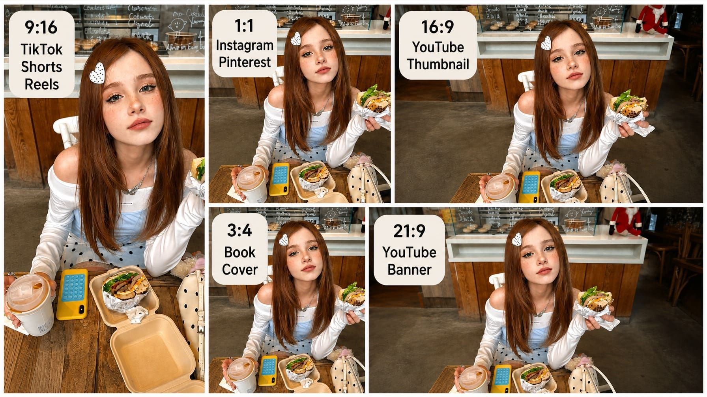
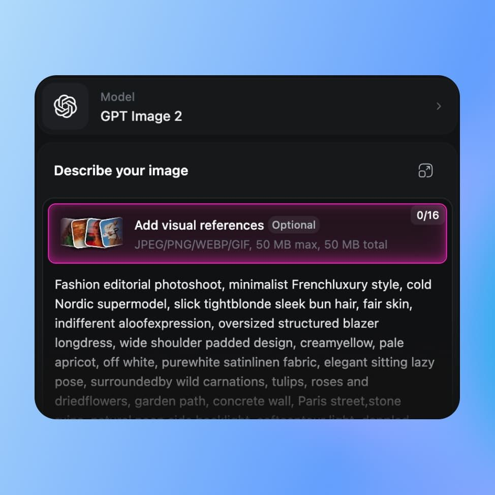

每周四十张产品图加三条解说视频：我用 OpenArt 搭了一条零 PS 的出图流水线
从抠图换背景到解说视频全自动出片，一个人怎么把 OpenArt 嵌进电商视觉生产链，少开三次 Photoshop、不用再熬夜剪片。
以前这套活我要开三个软件
我在一家淘宝店负责视觉物料，每周固定要做一批事：新款商品主图套图（白底、场景、促销底各一张）、三到五条产品功能解说短视频。以前这条链怎么走的？
商品图这边，先用 PS 抠图——钢笔工具沿着轮廓一点点描，遇到头发丝或者透明玻璃就得换快速选择加蒙版修半小时。抠完出透明底，再拖进事先做好的模板里摆位置、调光影。一条商品出三张图，熟练也要四十分钟。
解说视频更头疼。先写文案稿，然后用剪映找素材画面，找不到的自己拍或者网上扒，再配配音、加字幕、卡节奏。一条五分钟的解说片，从构思到导出少说两小时。
一周下来，我七成时间在重复劳动上，真正动脑子想创意的时间反倒被挤没了。试过找外包，质量参差不齐，而且改一轮就是两天起步。
现在一条链走到黑
几个月前从官网入手 OpenArt，开始把它嵌进这套流程，现在商品图和解说视频全在一个 App 里走，PS 和剪映基本吃灰了。
整个流水线长这样：
商品图链路：手机拍一张商品图 → 一键去背景出透明底 → 描述式换背景生成场景图 → 批量变体出促销底 → 导出
解说视频链路：写一句话主题描述 → 选解说视频模板 → 自动出脚本+画面+配音 → 导出或自己换配音
整个 App 从官方下载拿到就能跑，不用配置环境。

最容易断链的两个环节，我是怎么补的
说起来简单，实际跑的时候有两个地方最容易卡壳。
抠不干净怎么办
毛发丝、透明玻璃瓶这种东西，一键去背景也会出错。我现在的做法是：先跑一遍去背景，放大地检查边缘——如果有明显的抠穿或者残留，就在编辑画布里用画笔局部重绘，或者用参考图喂一张"干净主体"的参考让模型补。大多数情况一次就过，真遇上特别复杂的，才开 PS 做最后一公里，但这种情况一周也碰不到两三次。
另外我会把所有要抠的图先过一遍：主体轮廓清晰、背景和主体对比明显的，直接跑全自动；边缘复杂的，提前标记出来手动兜底。分清楚哪些值得花时间，哪些扔给机器就行。
解说视频的配音不对味
解说视频模板自动给配音，但那个声音听起来像新闻联播，跟店铺的年轻人口气不搭。这个卡点我踩了好几次才摸出套路：画面和音频分开用。OpenArt 导出时选画面轨——导出参数怎么调、格式怎么选，OpenArt文档里有完整说明——自己在剪映或者别的配音工具里重新配一遍音轨，再合成回去。画面生成那边它是一把好手，但配音的风格库还比较有限，这一段我没硬扛，老老实实把它当工具用在它擅长的地方。
具体省了多少事
算两笔账就清楚了。
商品图这边，以前一条商品三张图要四十分钟，现在从拍商品图到导出成品十五分钟搞定。抠图那一段基本是秒级完成，换背景描述一句"换成奶茶店白色桌面，暖光"就出场景图，促销底直接批量变体套模板。少了两次手动复制粘贴，不用再调图层透明度，光影匹配模型帮我做了——这是最赚的，以前光影调不对是最费眼的环节。
解说视频更夸张。以前一条五分钟的片要两小时起步，现在描述主题到出成品十分钟。脚本结构自动拆成起承转合，画面逐段生成，连配音都先给一个初稿。我要是对声音没那么讲究，直接导出就能发；讲究点的，换个配音再卡一遍节奏，半小时也够。
一周下来，以前我要花二十小时在重复劳动上，现在不超过五小时。多出来的时间，要么在 OpenArt 里试新模型练风格，要么真的做点创意的事——比如想想下周上新的视觉主题到底走什么调性，而不是在那跟头发丝较劲。

什么时候这套流程不划算
也不是所有场景都适合。
第一类是追求极致写实质感的人像。比如找真人模特拍的商品上身图，要皮肤纹理、布料质感完全真实的那种，OpenArt 的生成式去背景就不如专门的抠图工具精细。这一类我还是走老流程，不硬转。
第二类是品牌级的视觉资产。比如店铺首页的大幅海报、品牌 LOGO 元素的合成，这些涉及严格的品牌规范，我不会让 AI 生成出来直接用，还是自己在 PS 里抠细节。OpenArt 在这条链上的定位是"量产工具"，不是"精修工具"——把它放在对的位置，别指望它一把梭。
还有一个隐性成本：提示词的学习曲线。刚上手时我写的提示词很散，生成结果也飘。后来翻了平台官方出的提示词教程合集，跟着学了两三小时，把四要素（主体、风格、构图、光影）的直觉建立起来，提示词质量上了一个台阶，整条链的稳定性就上来了。这份资料是字典不是课本，不用通读，带着具体问题去查就行——比如"商品图的光影怎么写才像棚拍"，查完就回去练，留存率高很多。
一条总结的话
OpenArt 不是万能工具，但它把电商视觉生产里最重复、最费时间的那两段——抠图换背景和解说视频初剪——给包下来了。我现在的工作流是：它负责百分之八十的量产活，我负责剩下百分之二十需要动脑的部分。工具到位了，人才能回到人该干的事上。
平台上出的三份学习资料（提示词教程、模型训练教程、视频频道）我按顺序翻着学，每次学一点就回工作台试，效果比死磕某篇文档好得多。对新模型的上手也快——Nano Banana 那支模型的角色一致性特别好，以后要是店铺做自己的 IP 吉祥物或者角色设定集，直接用它换机位改服装就行，不用再靠提示词碰运气了。
这套流程我跑了快两个月，基本没出过什么大问题，小卡点也都有对应解法。有类似需求的朋友可以试试，先从一个环节切入——比如只把抠图这一段换掉，跑顺了再接下一段，比一下子全流程替换风险小很多。GitHub、Gitee 和 GitCode 三处都有同一份软件安装包，不同平台访问都方便。